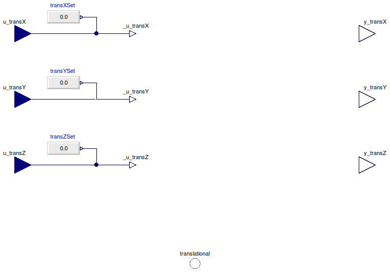

Table of Contents
- User's Guide
- Blocks
- Conditions
- Assemblies
- Regions
- Subregions
- Phases
- Species
- Connectors
- Characteristics
- Units
- Quantities
- Utilities
- Icons
Download
- Latest version (**Empty; please check back soon or contact kdavies4 at gmail.com.)
FCSys.Conditions.ByConnector.Translational
Conditions for a Translational connectorInformation
Extends from Modelica.Icons.Package (Icon for standard packages).Package Content
| Name | Description |
|---|---|
| TranslationalForce | Condition for a Translational connector, with force specified by default |
| TranslationalVelocity | Condition for a Translational connector, with velocity specified by default |
| Conditions for a component of translational momentum |
 FCSys.Conditions.ByConnector.Translational.TranslationalForce
FCSys.Conditions.ByConnector.Translational.TranslationalForce
Condition for a Translational connector, with force specified by default
Information
Extends from FCSys.Icons.Conditions.Single (Icon for a single-connector boundary condition).
Parameters
| Type | Name | Default | Description |
|---|---|---|---|
| Specification | |||
| X-axis translational | |||
| Boolean | internalTransX | true | Use internal specification |
| RealExpression | transXSet | redeclare Sources.RealExpres… | Source of internal specification |
| Y-axis translational | |||
| Boolean | internalTransY | true | Use internal specification |
| RealExpression | transYSet | redeclare Sources.RealExpres… | Source of internal specification |
| Z-axis translational | |||
| Boolean | internalTransZ | true | Use internal specification |
| RealExpression | transZSet | redeclare Sources.RealExpres… | Source of internal specification |
| Assumptions | |||
| Axes with translational momentum included | |||
| Boolean | inclTransX | true | X |
| Boolean | inclTransY | true | Y |
| Boolean | inclTransZ | true | Z |
Connectors
| Type | Name | Description |
|---|---|---|
| input RealInput | u_transX | X-axis translational specification |
| input RealInput | u_transY | Y-axis translational specification |
| input RealInput | u_transZ | Z-axis translational specification |
| Translational | translational | Connector for advection or diffusion of translational momentum |
| Measurement | ||
| output RealOutput | y_transX | X-axis translational measurement |
| output RealOutput | y_transY | Y-axis translational measurement |
| output RealOutput | y_transZ | Z-axis translational measurement |
Modelica definition
model TranslationalForce "Condition for a Translational connector, with force specified by default" import FCSys.Utilities.countTrue; import FCSys.Utilities.enumerate; import Modelica.Blocks.Sources; extends FCSys.Icons.Conditions.Single; // Specification // ------------- // X-axis translational replaceable function transXSpec = Component.force constrainedby Conditions.ByConnector.Translational.Component.PartialCondition "Quantity"; parameter Boolean internalTransX=true if inclTransX "Use internal specification"; replaceable Sources.RealExpression transXSet if inclTransX and internalTransX constrainedby Modelica.Blocks.Interfaces.SO "Source of internal specification"; // // Y-axis translational replaceable function transYSpec = Component.force constrainedby Conditions.ByConnector.Translational.Component.PartialCondition "Quantity"; parameter Boolean internalTransY=true if inclTransY "Use internal specification"; replaceable Sources.RealExpression transYSet if inclTransY and internalTransY constrainedby Modelica.Blocks.Interfaces.SO "Source of internal specification"; // // Z-axis translational replaceable function transZSpec = Component.force constrainedby Conditions.ByConnector.Translational.Component.PartialCondition "Quantity"; parameter Boolean internalTransZ=true if inclTransZ "Use internal specification"; replaceable Sources.RealExpression transZSet if inclTransZ and internalTransZ constrainedby Modelica.Blocks.Interfaces.SO "Source of internal specification"; // Measurement // ----------- // X-axis translational replaceable function transXMeas = Component.velocity constrainedby Conditions.ByConnector.Translational.Component.PartialCondition "X-axis translational quantity"; // Y-axis translational replaceable function transYMeas = Component.velocity constrainedby Conditions.ByConnector.Translational.Component.PartialCondition "Y-axis translational quantity"; // Z-axis translational replaceable function transZMeas = Component.velocity constrainedby Conditions.ByConnector.Translational.Component.PartialCondition "Z-axis translational quantity"; // Included components of translational momentum parameter Boolean inclTransX=true "X"; parameter Boolean inclTransY=true "Y"; parameter Boolean inclTransZ=true "Z"; // Inputs Connectors.RealInput u_transX if inclTransX and not internalTransX "X-axis translational specification"; Connectors.RealInput u_transY if inclTransY and not internalTransY "Y-axis translational specification"; Connectors.RealInput u_transZ if inclTransZ and not internalTransZ "Z-axis translational specification"; // Outputs final Connectors.RealOutput y_transX=transXMeas( translational.phi, translational.mPhidot, i=transCart[Axis.x]) if inclTransX "X-axis translational measurement"; final Connectors.RealOutput y_transY=transYMeas( translational.phi, translational.mPhidot, i=transCart[Axis.y]) if inclTransY "Y-axis translational measurement"; final Connectors.RealOutput y_transZ=transZMeas( translational.phi, translational.mPhidot, i=transCart[Axis.z]) if inclTransZ "Z-axis translational measurement"; Connectors.Translational translational(final n_trans=n_trans) "Connector for advection or diffusion of translational momentum"; protected final inner parameter Integer n_trans=countTrue({inclTransX,inclTransY, inclTransZ}) "Number of components of translational momentum"; final inner parameter Integer transCart[Axis]=enumerate({inclTransX, inclTransY,inclTransZ}) "Translational-momentum-component indices of the Cartesian axes"; Connectors.RealOutputInternal _u_transX=transXSpec( translational.phi, translational.mPhidot, i=transCart[Axis.x]) if inclTransX "Internal, working value of X-axis translational specification"; Connectors.RealOutputInternal _u_transY=transYSpec( translational.phi, translational.mPhidot, i=transCart[Axis.y]) if inclTransY "Internal, working value of Y-axis translational specification"; Connectors.RealOutputInternal _u_transZ=transZSpec( translational.phi, translational.mPhidot, i=transCart[Axis.z]) if inclTransZ "Internal, working value of Z-axis translational specification"; equation // X-axis translational connect(u_transX, _u_transX); connect(transXSet.y, _u_transX); // Y-axis translational connect(u_transY, _u_transY); connect(transYSet.y, _u_transY); // Z-axis translational connect(u_transZ, _u_transZ); connect(transZSet.y, _u_transZ); end TranslationalForce;
FCSys.Conditions.ByConnector.Translational.TranslationalVelocity
Condition for a Translational connector, with velocity specified by default
Information
Extends from TranslationalForce (Condition for a Translational connector, with force specified by default).
Parameters
| Type | Name | Default | Description |
|---|---|---|---|
| Specification | |||
| X-axis translational | |||
| Boolean | internalTransX | true | Use internal specification |
| RealExpression | transXSet | redeclare Sources.RealExpres… | Source of internal specification |
| Y-axis translational | |||
| Boolean | internalTransY | true | Use internal specification |
| RealExpression | transYSet | redeclare Sources.RealExpres… | Source of internal specification |
| Z-axis translational | |||
| Boolean | internalTransZ | true | Use internal specification |
| RealExpression | transZSet | redeclare Sources.RealExpres… | Source of internal specification |
| Assumptions | |||
| Axes with translational momentum included | |||
| Boolean | inclTransX | true | X |
| Boolean | inclTransY | true | Y |
| Boolean | inclTransZ | true | Z |
Connectors
| Type | Name | Description |
|---|---|---|
| input RealInput | u_transX | X-axis translational specification |
| input RealInput | u_transY | Y-axis translational specification |
| input RealInput | u_transZ | Z-axis translational specification |
| Translational | translational | Connector for advection or diffusion of translational momentum |
| Measurement | ||
| output RealOutput | y_transX | X-axis translational measurement |
| output RealOutput | y_transY | Y-axis translational measurement |
| output RealOutput | y_transZ | Z-axis translational measurement |
Modelica definition
model TranslationalVelocity "Condition for a Translational connector, with velocity specified by default" extends TranslationalForce( redeclare replaceable Conditions.ByConnector.Translational.Component.velocity transXSpec, redeclare replaceable Conditions.ByConnector.Translational.Component.velocity transYSpec, redeclare replaceable Conditions.ByConnector.Translational.Component.velocity transZSpec, redeclare replaceable Conditions.ByConnector.Translational.Component.force transXMeas, redeclare replaceable Conditions.ByConnector.Translational.Component.force transYMeas, redeclare replaceable Conditions.ByConnector.Translational.Component.force transZMeas); // See note in ElectrochemEfforts. end TranslationalVelocity;